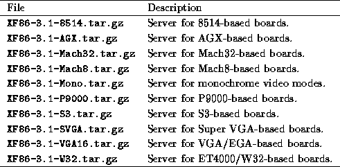
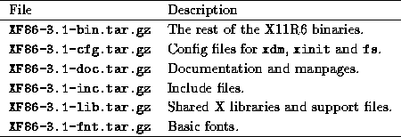

The Linux binary distribution of XFree86 can be found on a number of FTP sites. On sunsite.unc.edu, it is found in the directory /pub/Linux/X11. (As of the time of this writing, the current version is 3.1; newer versions are released periodically).
It's quite likely that you obtained XFree86 as part of a Linux distribution, in which case downloading the software separately is not necessary.
If you are downloading XFree86 directly, This table lists the files in the XFree86-3.1 distribution.
One of the following servers is required:

All of the following files are required:

The following files are optional:

The XFree86 directory should contain README files and installation notes for the current version.
All that is required to install XFree86 is to obtain the above files, create the directory /usr/X11R6 (as root), and unpack the files from /usr/X11R6 with a command such as:
# gzip --dc XF86-3.1-bin.tar.gz tar xfB --
Remember that these tar files are packed relative to /usr/X11R6, so it's important to unpack the files there.
After unpacking the files, you first need to link the file /usr/X11R6/bin/X to the server that you're using. For example, if you wish to use the SVGA color server, /usr/bin/X11/X should be linked to /usr/X11R6/bin/XF86_SVGA. If you wish to use the monochrome server instead, relink this file to XF86_MONO with the command
# ln --sf /usr/X11R6/bin/XF86_MONO /usr/X11R6/bin/X
The same holds true if you are using one of the other servers.
If you aren't sure which server to use, or don't know your video card chipset, you can run the SuperProbe program found in /usr/X11R6/bin (included in the XF86-3.1-bin listed above). This program will attempt to determine your video chipset type and other information; write down its output for later reference.
You need to make sure that /usr/X11R6/bin is on your path. This can be done by editing your system default /etc/profile or /etc/csh.login (based on the shell that you, or other users on your system, use). Or you can simply add the directory to your personal path by modifying /etc/.bashrc or /etc/.cshrc, based on your shell.
You also need to make sure that /usr/X11R6/lib can be located by ld.so, the runtime linker. To do this, add the line
/usr/X11R6/lib
to the file /etc/ld.so.conf, and run /sbin/ldconfig, as root.